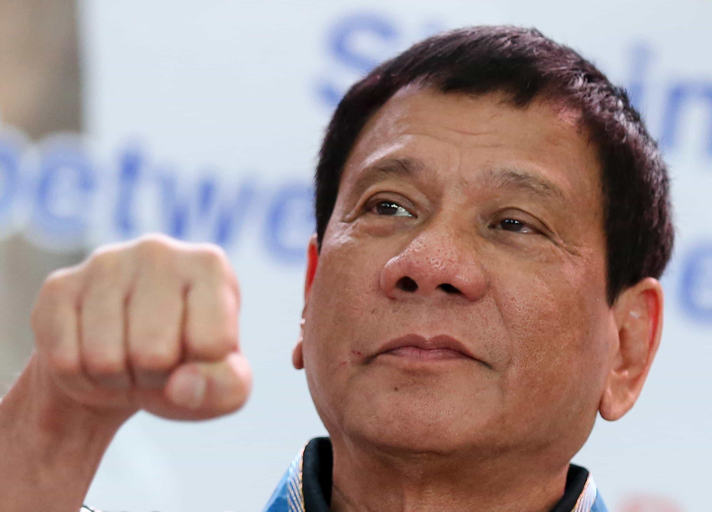

< < < Back
Filipino President Rodrigo Duterte Calls Barack Obama The “Son Of A Whore” – Return Of Kings
…we will always assert the need to have due process and engage the fight against drugs in a way that is consistent with basic international norms.
— Barack Obama
An international spat has emerged between US President Barack Obama and his Filipino counterpart, Rodrigo Duterte, on the sidelines of the G20 conference in Hangzhou, China. Obama, who has taken a number of official and unofficial steps to strip male students accused of rape of their due process protections, has recently come out swinging against the human rights record of Duterte. The Filipino President’s signature anti-crime policy since taking office this year has been the extrajudicial killing of suspected drug dealers.
Anticipating even more criticism over the due process elements of his anti-drugs action, which has so far killed several thousand people, Duterte called Obama the “son of a whore.” He warned the American Commander-in-Chief against trying to interfere in the Philippines’ sovereign affairs. A planned meeting was promptly canceled after Duterte’s strident comments, but it had seemed unlikely to take place before the insult, too.

Can you see why Duterte is nicknamed “The Punisher”?
Barack Obama’s insistence on claiming the moral high ground has been a recurring theme of his contradictory Presidency. For example, his previous vitriol against the Bush Administration’s Patriot Act and targeted killings program has been overshadowed by Obama’s basic retention of Bush era anti-terrorism legislation and an unprecedented number of drone killings overseas, including of American citizens. The same goes for his supposed championing of women’s rights while embracing standout female empowerment performers like Saudi Arabia.
The most likely criticism of any stance comparing the Obama and Duterte Administrations on due process will be that Filipino drug dealing suspects are being killed, whereas men accused of rape at US colleges usually face expulsion and employment blacklisting. That said, the Philippines, a developing country with a history of serious corruption, is facing a deep existential crisis. The very safety of countless urban communities and townships is being undermined by powerful criminal networks, often on par or surpassing those found in drug-infested areas of Mexico.
By comparison, the United States, which pumps billions annually into all manner of programs to improve the “living standards” of tens of millions of people, often unreasonably so, cannot be bothered to invest the appropriate time, procedures, and money into ensuring that young college men accused of rape receive even a modicum of the due process measures found in standard courts.
All in all, Duterte’s approach is much more justifiable and defendable than Obama’s.
Obama’s woeful track record on college due process
Signing a piece of paper to help stop “sexual assaults” is hardly fitting if the sexual assaults you claim have not even been verified.
In recent times, the Obama Administration has been vocal in promising to cut federal funding for colleges that do not tackle sexual assault “problems.” Problems are basically defined as women accusing men of rape, without any serious inquiries as to the merit of these accusations, which are actually best left to the police and general criminal justice system. So, solving these “problems” becomes a question of securing an acceptable number of “convictions.”
Although one would hope that college administrators would take the harder, more noble option and refuse to countenance blackmail, in reality most do not have the stomach to defy Washington. They are also aware that any refusal to accept Obama’s diktats would result in their own removal and the instalment of a lackey.
Speaking of lackeys, Vice President Joe Biden has taken up the mantle of Obama’s Roaming “Anti-Rape” Ambassador, allowing his boss to avoid more serious accusations of disregarding due process. And rather than specific laws, most of the time Obama and Biden have contributed to the pernicious climate against college men very loosely accused of rape by ramping up unofficial pressure. Reported sexual assaults, gerrymandered according to feminist surveys, are cited as bonafide sexual assaults by the White House, for instance.
Evidence against drug dealer suspects is almost always far more concrete than “evidence” against college “rapists”
You might find a ledger with a drug dealer’s illegal business records, but will be hard pressed to locate the confessing diary of a “rapist.”
Another problem with Obama’s hypocritical position on due process for Filipino drug dealer suspects is the nature of drug dealing as a crime. The production, shipment, distribution, market protection, and consumption involved with the drugs trade is extremely complex. A single batch of, say, cocaine might involve hundreds of people, even when the numerous drug users at the end of the line are excluded. This is particularly so if the drugs are originally manufactured abroad in places like Colombia or Mexico.
This complexity means that, among other things, countless text messages or other electronic messages are exchanged, corrupt officials or workers skirt rules whose non-fulfilment can be noticed by others, and people meet in streets or other crowded areas to exchange parcels or money. Communications like “When is the shipment coming?” are relatively easy to link to a narcotics operation and specific individuals, as are tightly sealed plastic bags hidden in terracotta pots.
Compare this to calls of “rape,” concerning situations where there are no witnesses and young men certainly do not make a habit of texting “Hey, I had sex with that passed out girl last night” or “I muffled her screams with her pillow!” Rodrigo Duterte’s vigilante groups, however distasteful you may find them, have better, more trustworthy means of determining who is a drug dealer than college kangaroo courts have in deciding who is a rapist.
Rape accusations invariably fall into the domain of he-said-she-said dynamics. At least in the First World, obvious injury after “rape” is consistently lacking. Furthermore, women often take many months, or even years, to report the “crime” and are continually reluctant to go to the police, opting instead for more indulgent college rape tribunals. Consequently, I like Duterte’s odds of stopping a real problem than Obama’s chances of thwarting a largely imaginary, at best unproven one.
Worse is to come with Hillary
Remember that a Hillary Clinton Presidency is potentially just around the corner. In one breath, Hillary panders to sexual assault accusers by saying they must be “listened to and believed.” In the next, she claims her husband is innocent of the rape accusations leveled against him. What we can expect, however, is that college men and men in general will be in her crosshairs if she is elected.
Sexual assault “reform” has been just one of many perverse ideas implemented by the Obama Administration. Inasmuch as his hypocrisy about due process has been immense, especially in relation to his current criticisms of Rodrigo Duterte, the post-Obama future portends even more of an undermining of the rule of law.
Men accused of rape, beware… things are going to get worse for you.
Read More: Liberal Harvard Professors Are Now “Rape Apologists” For Defending Due Process